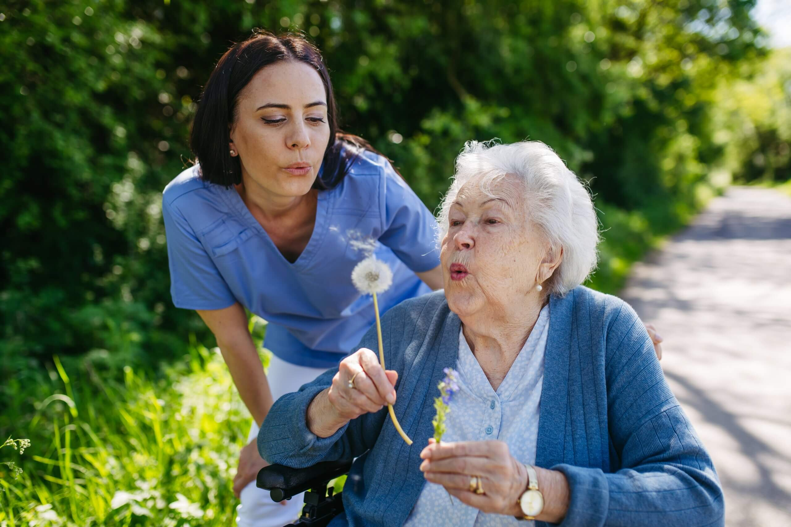

I am a motivated and adaptable individual with a passion for both personal and
professional growth. My interests range from playing golf, which has taught me patience,
discipline, and a strategic mindset, to puzzle-solving and video games, which reflect my
problem-solving skills and creativity. I also value social connections, and I enjoy
spending time with friends, which has helped me develop strong communication and
teamwork abilities.
I strive to bring these qualities—discipline, problem-solving, teamwork, and adaptability—
into everything I do, whether it is in my studies, future career in software engineering,
or my personal interests.
 Through my previous work experiences, I have gained valuable skills that I continue to carry forward. As a Shop Assistant, I learned how to deliver excellent customer service and operate efficiently in a fast-paced environment. Working as a Courier gave me experience with responsibility, time management, and working independently during demanding night shifts. My role as a Paver/Worker required persistence, physical endurance, and attention to detail, while my experience as a Carer strengthened my empathy, reliability, and ability to handle challenging situations with professionalism.